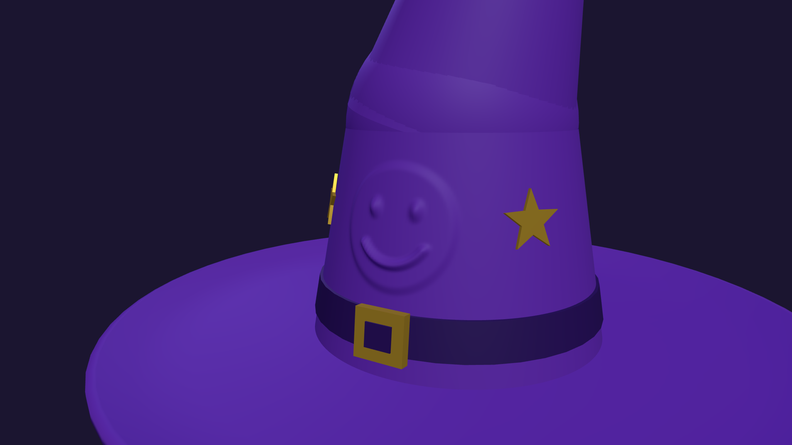

Build a wizard hat and sculpt a face into it
Two ideas in one scene. First, a floppy purple hat assembled from primitives — a lathe-turned brim, a three-section cone that bends, a band, a buckle and extruded stars. Then the part that is not a texture: a smiley face sculpted into the cone by pushing a dense mesh's surface outward along its normals, as one undoable step. Open the editor, open the Shell tab, and paste each block in order — or open the finished hat, hat.json (step 7).
clearScene() first.1 Materials and the brim
Three materials: the purple everywhere, a darker purple for the band and gold for the buckle and stars. A fourth, jointMat, is the same purple with a polygon offset — step 2 explains why. The brim is a LatheGeometry: one 2D profile (radius, height) spun around the y axis. The profile runs out along the underside, up the curled rim, and back along the top, so the brim has thickness and an upturned edge from a single list of points:
const purple = new MeshStandardMaterial({ color: 0x6a2bb8, roughness: 0.65, side: THREE.DoubleSide });
const bandMat = new MeshStandardMaterial({ color: 0x2e1260, roughness: 0.5 });
const gold = new MeshStandardMaterial({ color: 0xffd54a, roughness: 0.3, metalness: 0.7, emissive: 0x3a2a00 });
// Same purple, pushed back in depth so it never z-fights the cone walls it overlaps
const jointMat = new MeshStandardMaterial({ color: 0x6a2bb8, roughness: 0.65, side: THREE.DoubleSide, polygonOffset: true, polygonOffsetFactor: 8, polygonOffsetUnits: 8 });
const hat = new Group();
hat.name = 'Wizard Hat';
// Brim: a lathe profile that dips, then curls up at the rim (out along the underside, back along the top)
const brimProfile = [[0.85,0.02],[1.2,0.0],[1.7,-0.02],[2.05,0.04],[2.2,0.14],[2.2,0.18],[2.15,0.19],[2.0,0.1],[1.7,0.05],[1.2,0.06],[0.85,0.08]].map(p => new THREE.Vector2(p[0], p[1]));
const brim = new Mesh(new LatheGeometry(brimProfile, 64), purple);
brim.name = 'Brim';
hat.add(brim);2 The cone: three sections that bend
A single cone cannot flop over, so build it in three tapering sections. Each section is a Group parented to the top of the previous one and rotated a little more (-0.25, then -0.5 radians); the cylinder inside is offset up by half its height so the group's origin is the hinge. Because every section inherits its parent's rotation, the bend accumulates into a curl. A sphere sits at each hinge, with the same radius as the section below, to fill the wedge that opens on the outside of the bend:
const H1 = 1.3, H2 = 1.2, H3 = 1.1;
const seg1 = new Group(); seg1.name = 'Crown Section 1'; seg1.position.y = 0.07; hat.add(seg1);
const m1 = new Mesh(new CylinderGeometry(0.72, 0.95, H1, 64), purple); m1.name = 'Crown 1'; m1.position.y = H1 / 2; seg1.add(m1);
const seg2 = new Group(); seg2.name = 'Crown Section 2'; seg2.position.y = H1; seg2.rotation.z = -0.25; seg1.add(seg2);
const j1 = new Mesh(new SphereGeometry(0.72, 64, 32), jointMat); j1.name = 'Joint 1'; seg2.add(j1);
const m2 = new Mesh(new CylinderGeometry(0.42, 0.72, H2, 64), purple); m2.name = 'Crown 2'; m2.position.y = H2 / 2; seg2.add(m2);
const seg3 = new Group(); seg3.name = 'Crown Section 3'; seg3.position.y = H2; seg3.rotation.z = -0.5; seg2.add(seg3);
const j2 = new Mesh(new SphereGeometry(0.42, 64, 32), jointMat); j2.name = 'Joint 2'; seg3.add(j2);
const m3 = new Mesh(new CylinderGeometry(0.05, 0.42, H3, 64), purple); m3.name = 'Crown 3'; m3.position.y = H3 / 2; seg3.add(m3);
const tip = new Mesh(new SphereGeometry(0.07, 16, 12), purple); tip.name = 'Tip'; tip.position.y = H3; seg3.add(tip);polygonOffset pushes them slightly back in depth, so the cone walls always win the tie and the sphere only shows where the bend genuinely opens a gap. Matching the segment counts (64 on the cones and spheres) shrinks what is left.3 Band, buckle and stars
The band is a cylinder whose two radii are read off the cone's own radius function r1(t) (radius at height t), so it hugs the slope instead of floating or sinking. The buckle is a box with a smaller dark box as its hole. The stars are a 10-point Shape (alternating outer and inner radius) run through ExtrudeGeometry; each is placed on the cone at an angle and then tipped by the cone's slope so it lies flat against it:
const r1 = t => 0.95 - 0.23 * (t / H1); // crown 1 radius at height t
const band = new Mesh(new CylinderGeometry(r1(0.36) + 0.02, r1(0.14) + 0.02, 0.22, 40), bandMat);
band.name = 'Hat Band'; band.position.y = 0.25;
seg1.add(band);
const buckle = new Mesh(new BoxGeometry(0.3, 0.28, 0.06), gold);
buckle.name = 'Buckle'; buckle.position.set(0, 0.25, r1(0.25) + 0.05); buckle.rotation.x = -0.1;
seg1.add(buckle);
const hole = new Mesh(new BoxGeometry(0.16, 0.14, 0.07), bandMat);
hole.name = 'Buckle Hole'; hole.position.set(0, 0.25, r1(0.25) + 0.055); hole.rotation.x = -0.1;
seg1.add(hole);
// Gold stars, tilted to hug the cone's slope
const starShape = new Shape();
for (let i = 0; i < 10; i++) {
const a = Math.PI / 2 + i * Math.PI / 5, r = i % 2 ? 0.07 : 0.17;
i ? starShape.lineTo(Math.cos(a) * r, Math.sin(a) * r) : starShape.moveTo(Math.cos(a) * r, Math.sin(a) * r);
}
starShape.closePath();
const starGeo = new ExtrudeGeometry(starShape, { depth: 0.02, bevelEnabled: false });
const slope = Math.atan(0.23 / H1);
[-0.9, 0.9, 2.4, 3.9].forEach((ang, i) => {
const star = new Mesh(starGeo, gold);
star.name = 'Star ' + (i + 1);
const t = 0.85, r = r1(t) + 0.005;
star.position.set(Math.sin(ang) * r, t, Math.cos(ang) * r);
star.rotation.order = 'YXZ';
star.rotation.y = ang;
star.rotation.x = -slope;
seg1.add(star);
});
editor.execute(new AddObjectCommand(editor, hat));
tagClass(hat, 'hat');4 Add it to the scene
One AddObjectCommand adds the whole hat, so it is one undo step. Tag the group with a class, add a cool ambient light, a white key light and a violet rim light from behind, set a dark background, and aim the camera:
editor.execute(new AddObjectCommand(editor, new AmbientLight(0xcfc4ff, 0.7)));
const key = new DirectionalLight(0xffffff, 1.6);
key.position.set(5, 8, 6);
editor.execute(new AddObjectCommand(editor, key));
const rim = new DirectionalLight(0x9a7bff, 0.8);
rim.position.set(-6, 4, -5);
editor.execute(new AddObjectCommand(editor, rim));
setBackground('#1b1530');
const cam = editor.camera;
cam.position.set(3.2, 2.6, 5.6);
cam.fov = 45;
cam.lookAt(0.4, 1.6, 0);
cam.updateProjectionMatrix();
editor.controls.center.set(0.4, 1.6, 0);
editor.signals.cameraChanged.dispatch(cam);
editor.signals.objectChanged.dispatch(cam);5 Sculpt the face
The smiley is not painted on and not a separate decal object. It is the cone's own surface, pushed outward. Only the straight lower section (Crown 1) is sculpted, because the face lives on its front. Paste this whole block; the Shell does not allow top-level await, so everything runs inside an async function:
(async () => {
const { SetGeometryCommand } = await import('/editor/js/commands/SetGeometryCommand.js');
const crown = editor.scene.getObjectByName('Crown 1');
// A dense replacement for the crown's straight section. thetaStart = PI moves the
// seam to the back of the hat, away from the face (the front is +z).
const H = 1.3, RT = 0.72, RB = 0.95, RAD = 320, HEI = 140;
const g = new CylinderGeometry(RT, RB, H, RAD, HEI, true, Math.PI, Math.PI * 2);
const rAt = t => RB - (RB - RT) * (t / H); // crown radius at height t
// Soft dome falloff: 1 at the centre, 0 at distance 1
const bump = d => { const w = Math.min(1, Math.max(0, 1 - d)); return w * w * (3 - 2 * w); };
// The face, in surface coordinates: u = arc length around the hat, v = height above the face centre
const TC = 0.8;
const MR = 0.21, MY = 0.02, P0 = -2.55, P1 = -0.59; // smile = the lower arc of a circle
const mouthDist = (u, v) => {
const dy = v - MY, rho = Math.hypot(u, dy), ph = Math.atan2(dy, u);
if (ph >= P0 && ph <= P1) return Math.abs(rho - MR);
const e = p => Math.hypot(u - MR * Math.cos(p), dy - MR * Math.sin(p));
return Math.min(e(P0), e(P1)); // past the ends of the arc, measure to the nearest end
};
const relief = (u, v) => {
const base = 0.02 * bump((Math.hypot(u, v) - 0.3) / 0.06); // raised disc, flat top, soft edge
const eyes = [-0.12, 0.12].reduce((s, ex) => s + bump(Math.hypot((u - ex) / 0.05, (v - 0.1) / 0.075)), 0) * 0.035;
const mouth = bump(mouthDist(u, v) / 0.04) * 0.03;
return base + eyes + mouth;
};
// Push each vertex out along its own normal by the relief height
const pos = g.attributes.position, nor = g.attributes.normal;
for (let i = 0; i < pos.count; i++) {
const x = pos.getX(i), y = pos.getY(i), z = pos.getZ(i);
const ang = Math.atan2(x, z);
if (Math.abs(ang) > 0.9) continue; // only the front of the hat can be touched
const t = y + H / 2;
const h = relief(ang * rAt(t), t - TC);
if (h > 0) pos.setXYZ(i, x + nor.getX(i) * h, y + nor.getY(i) * h, z + nor.getZ(i) * h);
}
g.computeVertexNormals();
// computeVertexNormals leaves a lighting seam where the first and last columns meet; average them
for (let r = 0; r <= HEI; r++) {
const a = r * (RAD + 1), b = a + RAD;
const nx = nor.getX(a) + nor.getX(b), ny = nor.getY(a) + nor.getY(b), nz = nor.getZ(a) + nor.getZ(b);
const len = Math.hypot(nx, ny, nz) || 1;
nor.setXYZ(a, nx / len, ny / len, nz / len);
nor.setXYZ(b, nx / len, ny / len, nz / len);
}
nor.needsUpdate = true;
// A CylinderGeometry is saved by its parameters (radius, segments...), which would throw the
// sculpted vertices away on Save. Copy them into a plain BufferGeometry so the file keeps them.
const baked = new THREE.BufferGeometry();
baked.setAttribute('position', pos);
baked.setAttribute('normal', nor);
baked.setAttribute('uv', g.attributes.uv);
baked.setIndex(g.index);
editor.execute(new SetGeometryCommand(editor, crown, baked)); // one undo step
editor.deselect();
return 'sculpted ' + pos.count + ' vertices';
})()
Why each piece is there:
- A dense mesh. The original cone has 64 sides and one row of height, so it has nowhere to put a ridge a few hundredths of a unit wide. The replacement has 320 sides and 140 rows (about 45,000 vertices); the smile's ridge spans several vertices instead of one, which is what keeps its edges smooth instead of stair-stepped.
openEnded = truedrops the caps, which are hidden inside the hat anyway. - Surface coordinates, not world coordinates. The face is defined in
u(arc length around the hat,angle × radius at that height) andv(height above the face centre). Because the cone is narrower higher up, using the radius at each vertex's own height keeps the face from stretching into an oval. - Shapes from falloffs.
bump(d)is a smooth dome: 1 at the centre, 0 at distance 1. An eye isbumpof the distance from the eye's centre, scaled differently inuandvto make an oval. The smile isbumpof the distance to an arc: the lower part of a circle, measuring to the nearest end once you are past the arc's ends. The raised disc is abumpwith a flat top. Heights add up: disc 0.02, eyes +0.035, smile 0.03. - Push along the normal. Each vertex moves along its own normal by the relief height, not straight out along +z, so the relief follows the cone's slope and stays the same height everywhere.
- The seam. A cylinder's first and last columns of vertices sit on top of each other, and
computeVertexNormalsleaves them with different normals, which shows as a lighting line.thetaStart = Math.PImoves that seam to the back of the hat (the face is at +z, angle 0), and the loop at the end averages the two columns' normals so it disappears there too. - Bake it so Save keeps it. A
CylinderGeometryis written to a saved project as its parameters (radii, segment counts), never its vertices, so a sculpted cylinder would reopen as a plain cone. Copying the finished attributes into an ordinaryBufferGeometrymakes the file store the vertices themselves. - One undo step.
SetGeometryCommandswaps the geometry through the editor's history. It is not a Shell global, so it is imported directly.undo()brings back the plain cone andredo()brings back the face.
6 Check it
Confirm the geometry really changed, and that the sculpt is reversible rather than baked into the scene:
const crown = () => editor.scene.getObjectByName('Crown 1').geometry.attributes.position.count;
editor.scene.getObjectByName('Crown 1').geometry.type; // 'BufferGeometry'
crown(); // 45261
undo(); crown(); // 388 (the original 64-sided cone is back)
redo(); crown(); // 45261
$S('.hat').count(); // 1relief(u, v). Change TC to move the face up or down the cone, the eye centres ±0.12 and the 0.035 eye height to change the expression, or swap the smile's arc range P0 / P1 and radius MR for a frown or a surprised mouth. Re-running the block replaces the old geometry with a freshly sculpted one.7 Open the finished hat
The finished scene is public in tejaswigowda/test1: hat.json opens straight in the editor with the brim, the bending cone, the sculpted face, the band, buckle and stars, the three lights and the dark background, all named and tagged as built above.
hat.json includes the sculpted face, because step 5 bakes the crown into plain vertex data before it is saved. Saved from the editor's Git panel, big geometry buffers go out as binary assets next to a small scene file (here about 22 KB of JSON plus a 2.5 MB crown buffer); File → Save writes everything inline, about 8.5 MB. Either way the face survives a save and reload, which a CylinderGeometry crown would not.